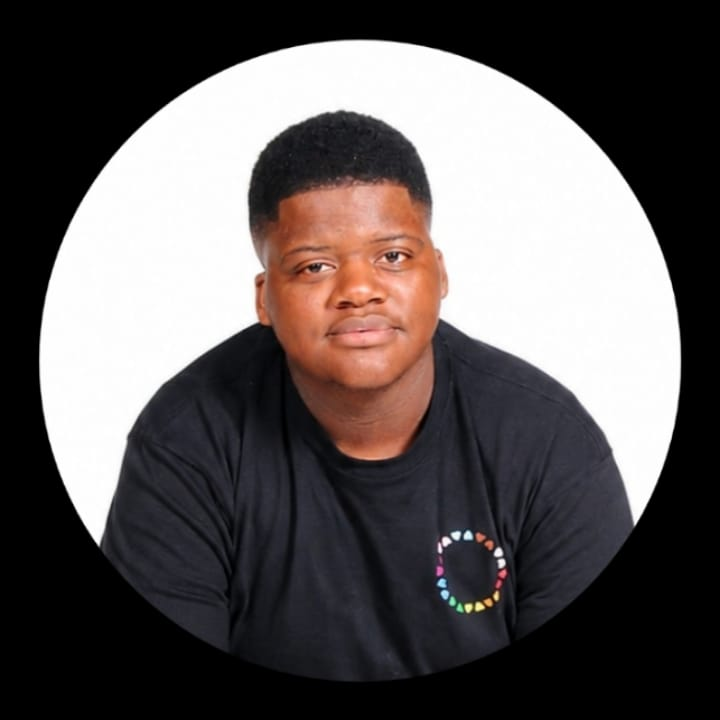
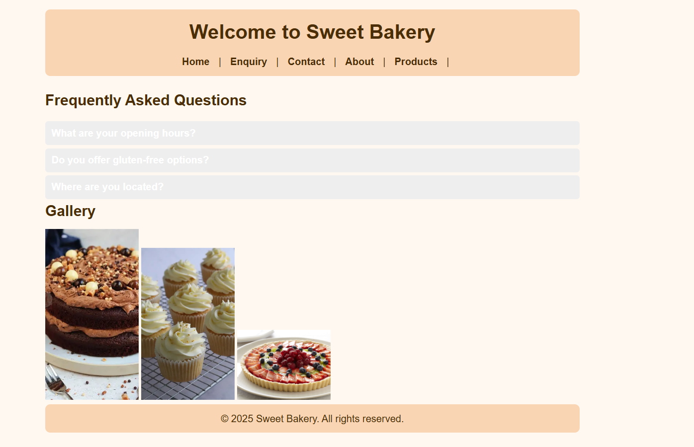
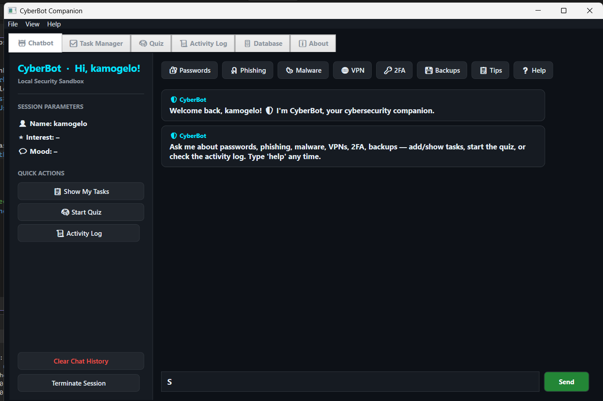
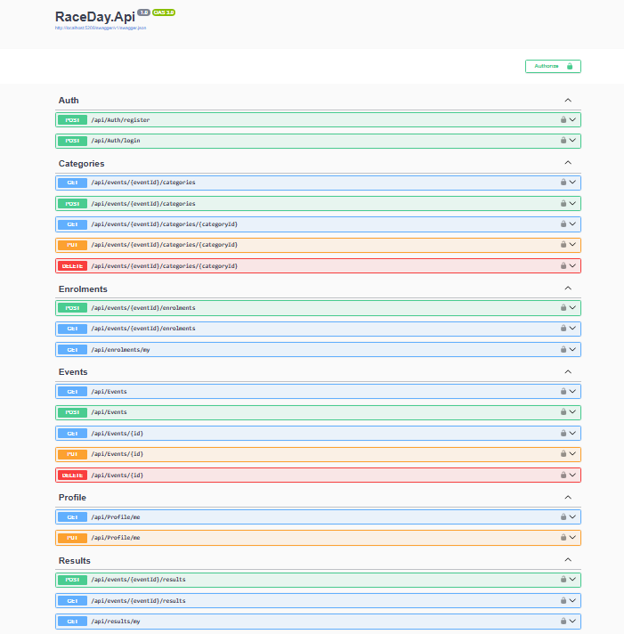

Web development
Building and styling responsive web pages with HTML and CSS.

OPEN TO INTERNSHIPS & JUNIOR IT OPPORTUNITIES
A second-year Software Development student at IIE Rosebank College, interested in turning real-world problems into practical software and web experiences.
01 const purpose = "solve";
02 function create(value) {
03 return value + " impact";
04 }
05 create(purpose);
01 / A LITTLE ABOUT ME
I’m developing my skills by creating projects that connect technology with everyday needs.
I’m currently in my second year of Software Development at IIE Rosebank College, with an expected completion date of 2027. I enjoy problem-solving, learning how systems work, and building experiences that are clear and useful for people.
I’m looking for an opportunity to learn from experienced teams, contribute to real projects, and keep growing as a developer.
Explore my GitHub02 / MY TOOLKIT
Building and styling responsive web pages with HTML and CSS.
Using JavaScript to add behaviour, validation, and useful interactions.
Practising programming fundamentals and application development.
This section reflects my current learning toolkit—not a claim of expert-level proficiency.
03 / SELECTED WORK
A selection of projects that show my progress in application development and web design. Open the repositories to explore the code and project files.
A Java student project exploring user registration, login checks, and input validation. It demonstrates foundational programming, conditional logic, and handling user details.
Next improvement: strengthen documentation, add test coverage, and clarify setup instructions.
View repository
A web project that showcases my HTML foundations and the process of structuring content for a browser. I’m continuing to improve the design, responsiveness, accessibility, and project documentation.
Next improvement: include responsive screenshots and a clear README with project goals.
View repository
A C# WPF desktop chatbot project focused on cybersecurity awareness. It explores keyword recognition, sentiment detection, simple memory, interactive quizzes, task support, and activity logging.
Next improvement: add clear setup instructions, screenshots, and tests to the repository.
View repository
The Part 2 build of RaceDay: a documented REST API for managing race events, categories, enrolments, results and user profiles, with registration and login. This stage focuses on code building and unit testing the API.
Next improvement: add a README with setup steps and publish test coverage results.
View repository04 / WHAT’S NEXT
I’m looking for internship opportunities and junior IT roles where I can support a team, learn from real projects, and grow through hands-on experience.
Let’s talk05 / GET IN TOUCH
For internships, junior roles, collaboration, or feedback on my work, feel free to reach out through the links below.